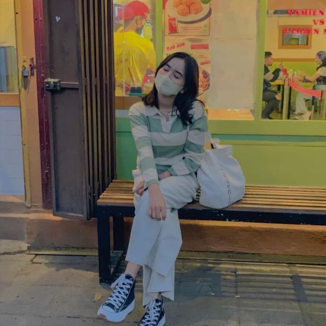

Gimana kabarnya hari ini cantikku? bete? badmood? happy?
semoga kamu happy ya😘
Terimakasih sudah ada di hidup aku, mungkin kalau kamu ga DM duluan waktu itu, mungkin aku ga akan kenal kamu.
jadi aku sangat berterima kasih
Jangan sampe asing ya, karena aku udah nyaman sama kamu 😭 tetep jadi Aurel yang aku kenal, jadi Aurel yang selalu ngabarin aku, jadi Aurel yang suka chat aku, jadi Aurel yang suka call aku tiap malam
I don't want to be the one who makes you smile, I want to be the reason you feel safe when the world gets too noisy. I want to be the one you think of when everything feels too heavy, the one you come to when your heart needs a break. You don't have to pretend to be okay around me. You can cry, you can break down, and I'll still hold you like I always have. I'm not going anywhere, I'll always be here for you. There's no version of this life where I'd rather be apart from you. And when I say I'd do anything for you, it's not out of obligation, it's because loving you is something I choose to do, unconditionally, without hesitation, and without end.
Di link yang kamu kirim ke aku sebelumnya. Kamu ngomong, wujudin impian kita, wish list, dll, semoga kita bisa wujudin, bareng bareng ya😘
Semoga kita bisa bersama sampai tua nanti ya😘😘. Aku gamau sama yang lain, pengennya sama kamu. Tapi yang bisa memisahkan kita hanya 3,yaitu: kematian,ada orang yang lebih dari aku,dan pilihan ortu kamu. Tapi tenang saja aku akan selalu bersamamu, jika 3 hal tersebut tidak terjadi.

Mungkin hanya segitu yang bisa aku ungkapkan. Maaf jika aku berbeda jauh dari laki laki yang pernah kamu temui😔
Byeeeeee Sayangkuuuu,Cantikkuuuuu,Duniakuuuuuu,Semestakuuuuuuuu😘😘
Maaf tidak sebagus yang kamu dan tidak sebagus yang kamu banyangkan.😔😔 Untuk foto maaf kalo tata letaknya jelek, tapi itu hanya tata letaknya, bukan orangnya😘😘.
Dan yang terakhir aku tidak tau lagu favoritmu apa, yang aku ketahui hanya artis Justin Bieber, jadi aku cari lagunya yang mungkin kamu tahu
— Dari seseorang yang mungkin tak sempurna —
Dava